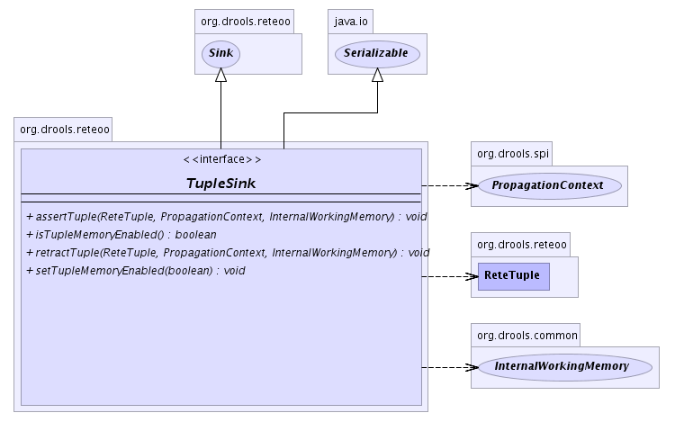

org.drools.reteoo
Interface TupleSink
- All Superinterfaces:
- java.io.Serializable
- All Known Subinterfaces:
- TupleSinkNode
- All Known Implementing Classes:
- AccumulateNode, CollectNode, EvalConditionNode, ExistsNode, FromNode, JoinNode, NotNode, QueryTerminalNode, RightInputAdapterNode, RuleTerminalNode
public interface TupleSink
- extends java.io.Serializable
Receiver of propagated ReteTuples from a
TupleSource.
- See Also:
TupleSource
-
- 
assertTuple
void assertTuple(ReteTuple tuple,
PropagationContext context,
InternalWorkingMemory workingMemory)
- Assert a new
ReteTuple.
- Parameters:
tuple - The ReteTuple to propagate.context - The PropagationContext of the WorkingMemory actionworkingMemory - the WorkingMemory session.
retractTuple
void retractTuple(ReteTuple tuple,
PropagationContext context,
InternalWorkingMemory workingMemory)
isTupleMemoryEnabled
boolean isTupleMemoryEnabled()
setTupleMemoryEnabled
void setTupleMemoryEnabled(boolean tupleMemoryEnabled)